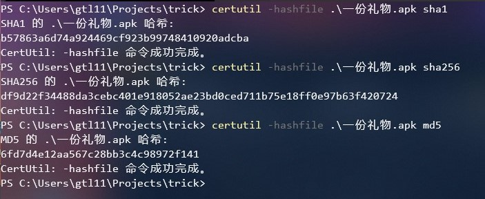
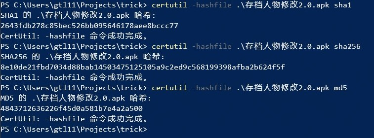

“O泡果奶”app解析0 hash比对
前言
当我关注到这个app时，是我一个现居异地的朋友发的一条说说。
其实早在几个小时前，宿舍里放出O泡果奶广告的声音时，我就体会过这个app的威力了，但我以为它只在我们学校内传播。
直到我看见了那条说说。
当我顺手转发了之后，十多条评论纷纷抱怨他们的经历，我一个朋友还给我发了他们大学流传的apk，我逐渐意识到不对劲。
但真正使我打算认真分析这个app的，是我另一个朋友让我发这个apk的hash的消息。
于是，我便走上了逆向工程之路。
hash比对的原因
不同地方流传的apk，名字可能会不一样。就比如我手上的两个apk：“一份礼物.apk”和“存档人物修改2.0.apk”，要验证这两个apk是否是同一个，就只能比对hash。
获取hash
这是“一份礼物.apk”的hash：
这是“存档人物修改2.0.apk”的hash:
显然二者不是同一个apk。
后来跟朋友的hash比对，“一份礼物.apk”的hash与他的一致。